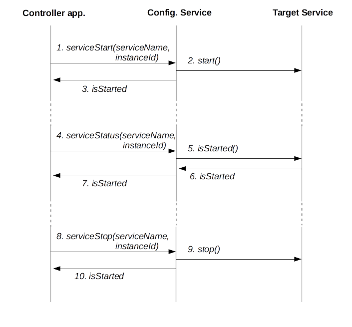
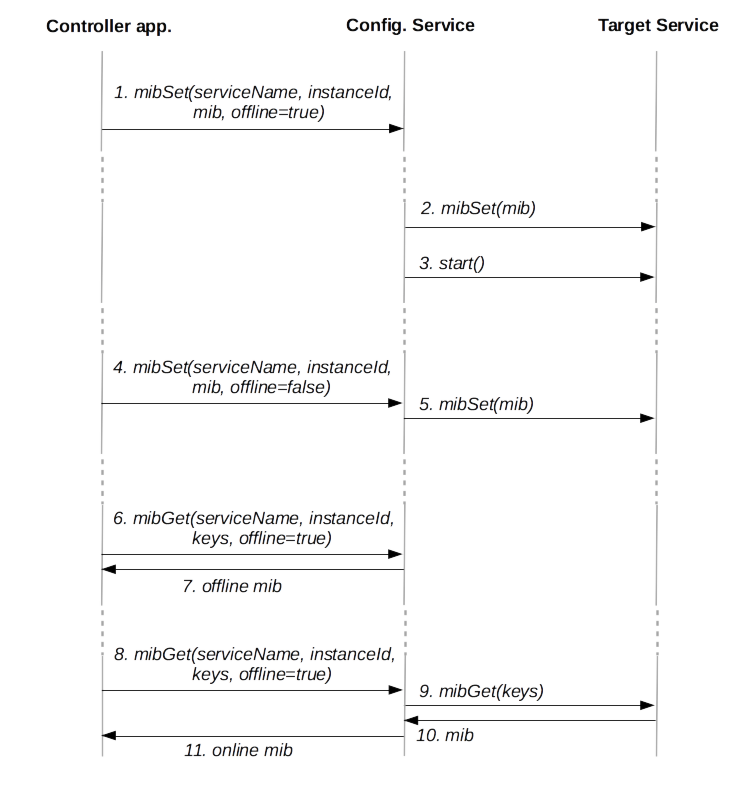

The config mechanism manages configuration and execution of services.
As of middleware version 2.2, the ConfigService is able to manage local and remote services, as well as manage service Management Information Base.
As of middleware version 2.9, the ConfigService maintains 4 status for services (UNKNOWN, STARTED, STOPPED, FAILED) instead of (STARTED, STOPPED) previously.
Local and remote services must implement the ConfigurableService interface and must be defined in the main middleware configuration file (choirconf.xml) in order to be controllable by the ConfigService.
The serviceStart()/serviceStop()/serviceStatus()/serviceStarted() commands control execution of services. A service may have 4 status:
- UNKNOWN: The status of the service could not be determined. The ConfigService did not manage to get the status of the service and thus does not know whether it is started or not.
- STARTED: The service is started and properly running. The service is started and successfully responded to the config request, reporting a status STARTED.
- STOPPED: The service is not running and is not requested to be started. The service is either not instantiated (for services embedded in the middleware) or never connected to the middleware (for remote services). Or the service is instantiated or connected but administratively stopped and the service successfully responded to the config request, reporting a status STOPPED.
- FAILED: The service encountered a failure in its execution. The service encountered an error on its startup or shutdown (e.g. bad configuration), or disconnected from the middleware (for remote services). Or the service is instantiated or connected and the service successfully responded to the config request, reporting a status FAILED.
The serviceStarted() command is the legacy command to request the service status. It returns true when the service is in state STARTED and false when the service is in another state. It is obsoleted by the serviceStatus() command.
The mibGet()/mibSet()/mibReset() commands are used to query the service MIB. These commands allow querying either offline and online MIBs:
- The offline MIB is stored by ConfigService and loaded on the service only when a serviceStart() command is issued for this service. As a consequence, specifying offline=true with the mibGet()/mibSet()/mibReset() commands will only query the MIB stored by ConfigService and will not have any impact on the target service until its next restart. No access control or data integrity check is performed on this MIB by the target service until the entries are effectively loaded into the service at service startup or restart.
- The online MIB is stored by the target service which will closely manage and control it during its execution. The mibGet()/mibSet()/mibReset() commands may have an immediate impact on the service, even at runtime if the service supports it. The target service likely applies strict usage for online MIB operations. In particular it will perform immediate type checking on entries set by the user, and will apply read/write policies on variables. The service may expose runtime informations such as statistics as readonly MIB entries or arbitrary commands as writeonly MIB entries.
Offline MIB operations should be preferred when configuring a service before applying a serviceStart() operation on it (for either starting or restarting the service). They are also needed to configure a remote service before it is effectively connected to the middleware server (in such a case, online operations will fail).
Online MIB operations should be used to change specific configuration variables of a service at runtime (if supported by the service), or to retrieve service statistics.
If they are successful, mibSet()/mibReset() operations applied on online MIB are also applied on offline MIB stored by the ConfigService for this target service so as to preserve modifications for the next service restart.
Description of commands
- List service: List services declared to the Config Service
- Control operation (start, stop, status): Start, stop, or get the status of a service
- MIB operation (get, getall, set, reset): Get or set a MIB variable
List services command
An application may request the Config service for the list of services declared on the middleware. The Config Service return the list of services and, for each service, whether or not it is currently running.
| I/O | Mand. | Variable | Description |
| out | x | service_list | List of services returned by the Config Service |
Code samples
list services
Command Line
C/C++ API
uint32_t nbr_service = 0;
struct choir_service_t * service_list;
int n = choir_list_services(choir_handler, &nbr_service, &service_list);
for(int i = 0;i < nbr_service;i++){
switch (service_list[i].status) {
case CONFIG_SERVICE_STATUS_UNKNOWN:
printf("%s[%d] : unknown\n", service_list[i].service_name,
service_list[i].instance_id);
break;
case CONFIG_SERVICE_STATUS_STARTED:
printf("%s[%d] : started\n", service_list[i].service_name,
service_list[i].instance_id);
break;
case CONFIG_SERVICE_STATUS_STOPPED:
printf("%s[%d] : stopped\n", service_list[i].service_name,
service_list[i].instance_id);
break;
case CONFIG_SERVICE_STATUS_FAILED:
printf("%s[%d] : failed\n", service_list[i].service_name,
service_list[i].instance_id);
break;
default:
printf("%s[%d] : unknown\n", service_list[i].service_name,
service_list[i].instance_id);
break;
}
}
Java API
ConfigService configService = yogokoClient.getConfigService();
List<Service> services_list = configService.listServices();
for(Service service : services_list){
switch (service.getStatus()) {
case ConfigService.SERVICE_STATUS_UNKNOWN:
System.out.println(service.getServiceName() + "[" + service.getInstanceId + "] : unknown")
break;
case ConfigService.SERVICE_STATUS_STARTED:
System.out.println(service.getServiceName() + "[" + service.getInstanceId + "] : started")
break;
case ConfigService.SERVICE_STATUS_STOPPED:
System.out.println(service.getServiceName() + "[" + service.getInstanceId + "] : stopped")
break;
case ConfigService.SERVICE_STATUS_FAILED:
System.out.println(service.getServiceName() + "[" + service.getInstanceId + "] : failed")
break;
default:
System.out.println(service.getServiceName() + "[" + service.getInstanceId + "] : unknown")
break;
}
}
Websocket API (JS)
let ws = new WebSocket("ws://127.0.0.1:8080/config");
ws.onmessage = function (msg) {
let data = msg.data;
console.log(data);
}
ws.send('{"command":"list-services"}');
Control commands
An application may perfom start or stop operation on a service. It may also request the status of a service.
| I/O | Mand. | Variable | Description |
| in | x | operation | Operations are:
- start the service
- stop the service
- get whether the service is started |
| in | x | service_name | Name of the service to perform the operation on |
| in | | instance_id | Instance number of the service to perform the operation on |
| out | x | status | Status of the service (unknown, started, stopped, failed) |
Code samples
control status/stop/start : get status of Recorder app, start the recorder if stopped
Command Line
$ IS_STARTED=$(mwconfig control status -t Recorder)
$ if [ "${IS_STARTED}" != "Service is started" ]; then
$ mwconfig control start -t Recorder
$ fi
C/C++ API
int n = choir_service_status(choir_handler, "Recorder" , instance_id);
if (n != CONFIG_SERVICE_STATUS_STARTED) {
choir_service_start(choir_handler, "Recorder" , instance_id);
}
Java API
ConfigService configService = yogokoClient.getConfigService();
int recorderStatus = configService.serviceStatus("Recorder", 0);
if(recorderStatus != ConfigService.SERVICE_STATUS_STARTED){
configService.serviceStart("Recorder", 0);
}
Websocket API (JS)
let ws = new WebSocket("ws://127.0.0.1:8080/config");
ws.onmessage = function (msg) {
let data = JSON.parse(msg.data);
// Start Recorder Service if it's not started
if (data.status != "started") {
ws.send('{"command":"config-start","service-name":"Recorder"}');
}
}
// Get status of the Recorder Service
ws.send('{"command":"config-status","service-name":"Recorder"}');
MIB commands
An application may access or modify MIB entries of a service.
Requests may be offline or online:
- An offline request is not transferred to the target service. The Config service responds to the request from its own data.
- An online request is transferred to the target service. The service is in charge of responding to the requester. This request fails if the service is not running.
| I/O | Mand. | Variable | Description |
| in | x | operation | Operations are:
- get MIB entries from key list
- get all MIB entries
- set MIB entries
- reset MIB entries to their default value |
| in | x | service_name | Name of the service to perform the operation on |
| in | | instance_id | Instance number of the service to perform the operation on |
| in | | offline | Whether the request is offline (not transfered to the service) or online (transfered to the running service) |
| in | | key_list | (get operation) List of keys to get |
| in | | entries | (set operation) MIB entries (key=>value map) to push to the configuration |
| out | | mib | (get/getall operation) MIB entries returned from the service configuration |
Code samples
mib get: get-all mib of a service mib set: start a record
Command Line
$ mwconfig mib get-all -t Recorder
$ mwconfig mib set -t Recorder 'recorder.action="record"' 'recorder.capturename="recordName"'
C/C++ API
mib = choir_mib_get_all(choir_handler, "Recorder", instance_id, 1);
if (mib!=NULL){
choir_map_print(mib);
}
mib = choir_map_init(2);
choir_map_put_string(mib,"recorder.action","record", strlen("record"));
choir_map_put_string(mib,"recorder.capturename","recordName", strlen("recordName"));
choir_mib_set(choir_handler, "Recorder", instance_id, 0, mib);
Java API
ConfigService configService = yogokoClient.getConfigService();
MIB allMIBRecorder = configService.mibGetAll("Recorder", 0, false);
for(String mibKey : allMIBRecorder.keySet()){
System.out.println( mibKey + " : " + allMIBRecorder.get(mibKey));
}
MIB newMib = new MIB();
newMib.put("recorder.action", "record");
newMib.put("recorder.capturename, "recordName");
configService.mibSet("Recorder", 0, newMib, false);
Websocket API (JS)
let ws = new WebSocket("ws://127.0.0.1:8080/config");
ws.onmessage = function (msg) {
let data = msg.data;
console.log(data);
}
// Get MIB entries of the Recorder Service
ws.send('{"command":"mib-getall","service-name":"Recorder"}')
// Start a record
ws.send('{"command":"mib-set","service-name":"Recorder", "mib":{"recorder.action":"record","recorder.capturename":"Record_1"}}');
Sequence diagrams
List services
Service listing
- Services are managed (started/stopped) by ConfigService
- Controller application requests the list of services from ConfigService
- ConfigService returns the list of services, as declared in configuration, and their status
Control execution of services

Control execution of services
Execution control
- Controller application requests to start instance instanceId of service serviceName
- ConfigService instanciate the service and sends a start command
- ConfigService returns to the requesting application whether the operation succeeded
- Controller application requests the status of instance instanceId of service serviceName
- ConfigService transfers the request to the service
- The Target Service provides its status
- ConfigService sends the service status to the requesting application
- Controller application requests to stop instance instanceId of service serviceName
- ConfigService transfers the request to the service
- ConfigService returns to the requesting application whether the operation succeeded
Control execution of services

Control execution of services
Execution control
- Controller application performs an update on the offline MIB of the instance instanceId of the service serviceName. Whatever the status of the service is, the request is directly managed by ConfigService and the MIB managed by the ConfigService is updated
- On next start of the Target Service, the service is first passed the current mib stored by ConfigService to update the local MIB
- Then, the service is started
- Controller application performs an update on the online MIB of the instance instanceId of the service serviceName
- The mib set command being an online MIB request, it is transferred to the service, if the service is not started an error is issued, if the command succeeds, the MIB managed by ConfigService is updated as well
- Controller application performs an access to the offline MIB of the instance instanceId of the service serviceName. Whatever the status of the service is, the request is directly managed by ConfigService and the MIB managed by the ConfigService is returned
- ConfigService sends the content of the offline MIB, managed by ConfigService
- Controller application performs an access to the online MIB of the instance instanceId of the service serviceName.
- The mib get command being an online MIB request, it is transferred to the service, if the service is not started an error is issued
- Target Service returns the MIB to ConfigService
- ConfigService returns the online MIB to the requesting application
Note:
- Some configuration variables cannot be set while the service is running. These variables may be set using a offline MIB set, they will be pushed to the service on next start.
- The online MIB being directly managed by the Target Service, it may be used to get valuable statistics from the service (number of sent/received messages, errors, etc).
 1.8.13
1.8.13